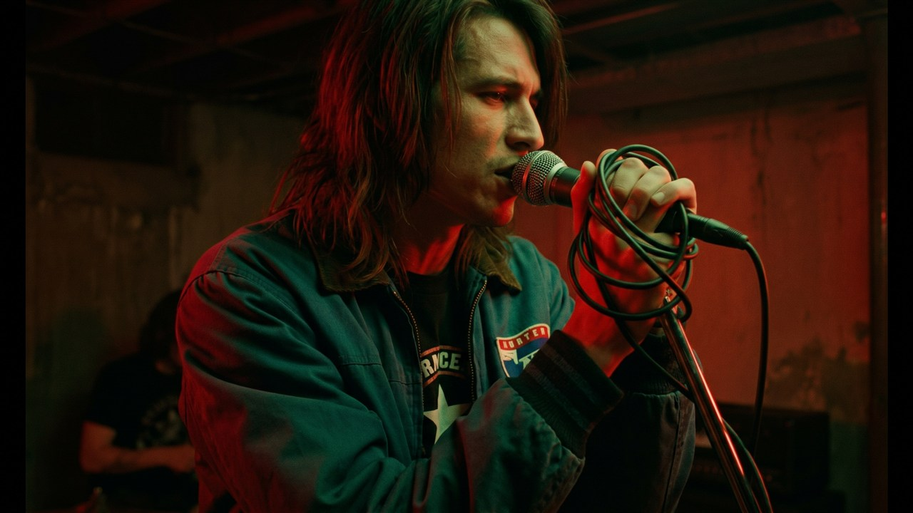
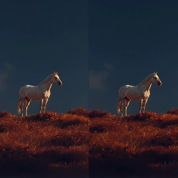

Performance close-up
avaRoute to the resolved cast reference when the script says Artist: ava.

Add reference images for artists, band members, or performers so the script can route shots by Artist fields. The goal is to make the People step feel like a guided wizard, not just a form.
Resolved people, script slugs, and roles


Cast-aware brief copy, built from existing step language
Simple, guided fields instead of a raw form
What the owner would see inside the flow


Inline proof that the wizard would drive later steps
Route to the resolved cast reference when the script says Artist: ava.
Collective tags like “all” or “band” expand to the full cast roster.

Qwen Image Edit needs a cast/reference image. The wizard can surface that dependency before keyframes.
Copy-ready text that matches the current flow
It should guide, not just collect fields
Small enough to evaluate quickly